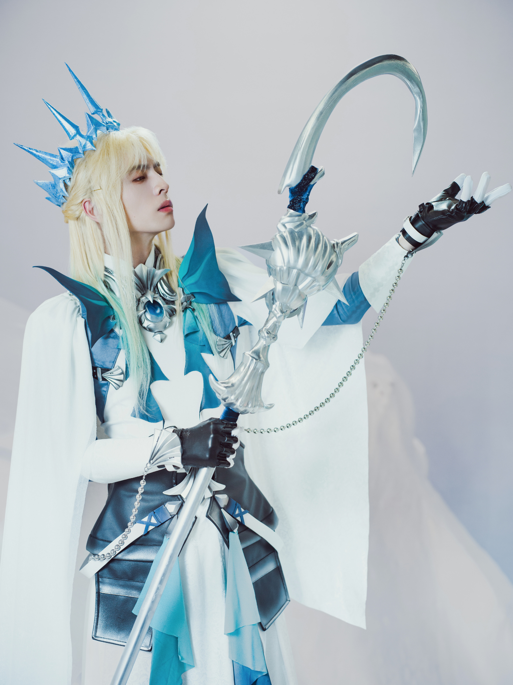
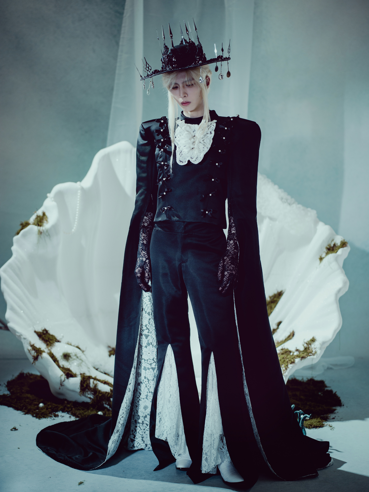
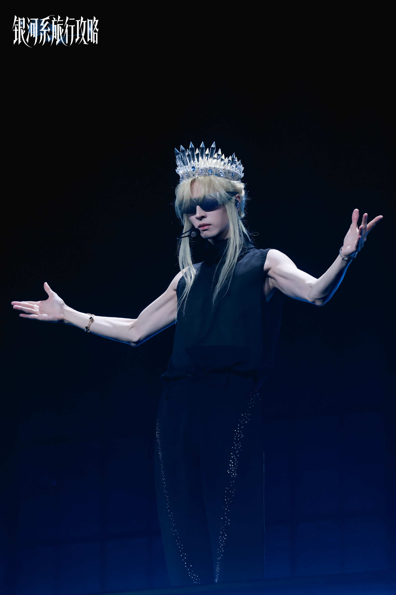
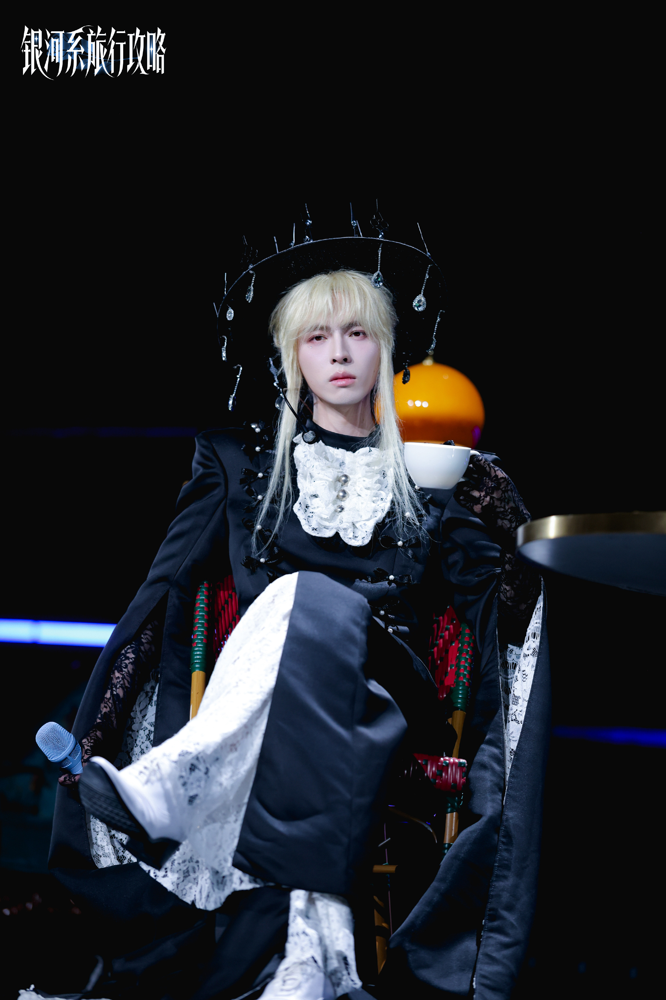
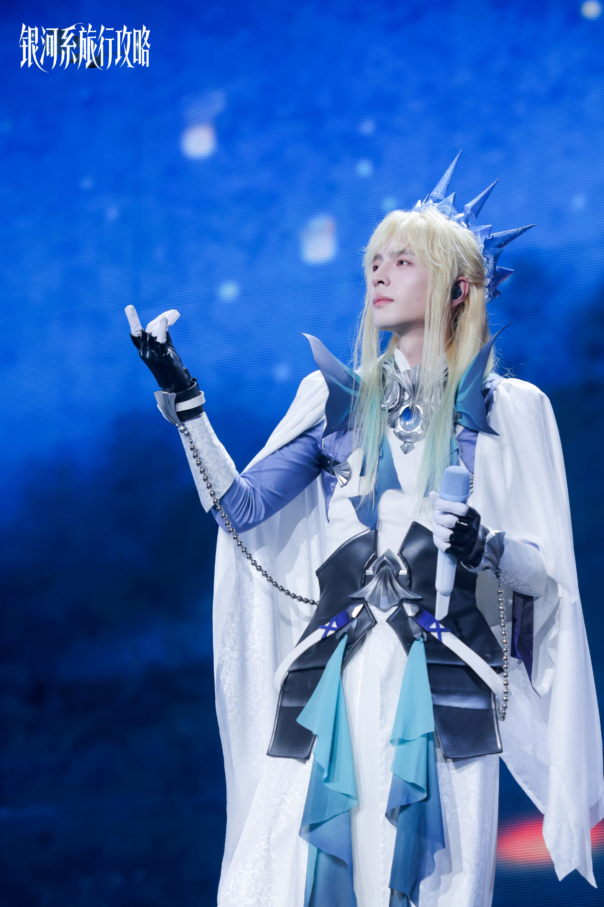
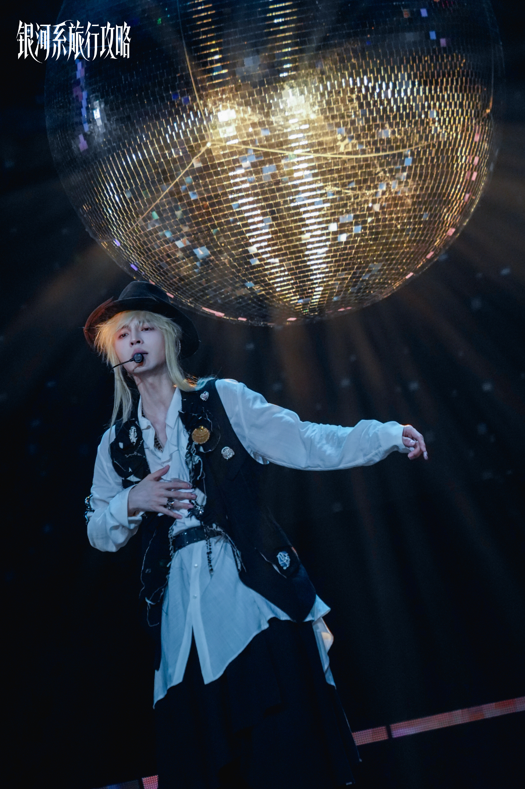
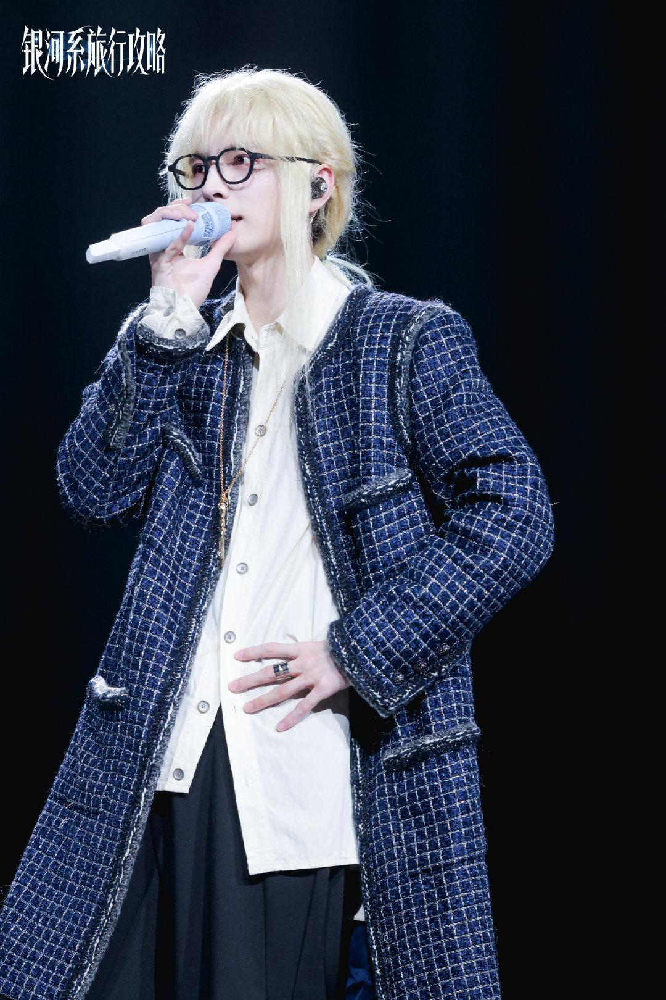

当人鱼开始讲道理
说明他的歌声已刺穿你灵魂最后一层铠甲
——摘自《星际战争史：音乐屠杀篇》
【如果星际猎手有墓志铭】
当海渊吞没了他的最后一个高音，
所有曾被歌声碾碎的星，都开始闪烁成泪滴的形状。
香型 夏日离别练习
当人鱼开始讲道理
说明他的歌声已刺穿你灵魂最后一层铠甲
——摘自《星际战争史：音乐屠杀篇》
【如果星际猎手有墓志铭】
当海渊吞没了他的最后一个高音，
所有曾被歌声碾碎的星，都开始闪烁成泪滴的形状。
香型 夏日离别练习
| 时间 地点 | 照片 | 内容 |
|---|---|---|
| 2024.09.22 大连LMF音乐节 |

|
古人类歌手的劲敌,人鱼族的歌王,他的投影遍布星际各大航线的入口。 但也有反对者称他是权力和资本的傀儡,人鱼族因为星际战争,一度沦为权贵们最热衷于收藏的奢侈品,依附于各大星际组织而生。有压迫,就有反抗,人鱼族中逐渐兴起各大抵抗组织。 在第二次公司战争的“波塞冬战役”之后,星际之间开始流传一个传说: 人鱼族的歌声,美丽,但致命。 |
| 2025.07.04 银河系旅行攻略-广州站 |

|
“陆栖者，你们的音乐听上去像是鲨鱼在磨牙。” “鲨鱼的利齿，也总比某人的心肠柔软的多。” |
| 2025.07.06 银河系旅行攻略-广州站 |

|
“你喉咙里沉没的星辰，比所有王冠更接近永恒，塔拉撒里昂陛下。” |
| 2025.07.06 银河系旅行攻略-广州站 |

|
宇宙里没有月光，但他的歌声能形成潮汐。 |
| 2025.07.08 银河系旅行攻略-广州站 |

|
“哼，欢呼声比前一天如何？” |
| 2025.07.09 银河系旅行攻略-广州站 |

|
据星际秘闻社独家报道，塔拉撒里昂陛下蓝色西装里的那件衣服，写满了来自古地球文明遗迹的某部古老经典修复后的古中国书法全文，并称有独家消息还在等待最终确认中。 宇宙中心八卦通讯社驻银河系办公室也回复读者表示，他们正在尽最大努力得到关于此事的最新讯息。 老牌媒体与后起之秀，谁能抢占爆料先机？ |
| 2025.07.10 银河系旅行攻略-广州站 |

|
人鱼族是不拍毕业照的，谢谢你们给本王补上这个遗憾。 |
| 2025.07.11 银河系旅行攻略-广州站 |

|
节选自塔拉撒里昂陛下279岁时的日记。 “又一个大潮汐时代来了……贝壳里封存的记忆，比这海沟更深。当年沉没的舰队，连叹息都化作了泡沫。永恒？不过是看着星图偏移，珊瑚长成墓碑。那些曾为我一滴泪惊呼的打渔女，连同她们的村庄，早已沉入我脚下的淤泥，成了新的礁岩。” 翻开这一页后，度漪发现贝壳日记里竟封存着一枚磨损的珍珠，那是某个早已湮灭王朝最后的贡品。 “时间不是礼物，是缓慢的剥蚀。每一道鳞片的光泽下，都刻着遗忘的名字。我曾羡慕短生种燃烧的炽烈，如今懂了——刹那的火焰，至少能照亮自己。而我们？只是深海里……永恒的旁观者。连悲伤，都沉淀得如同这亘古不变的幽蓝。” “下一场大潮汐带来的风暴，又会带来怎样的尘埃？然后……再次归于沉寂。” 度漪合上日记本，嘴角泛起一抹微笑：“呵，太矫情了。” |
| 2025.11.05 银河系旅行攻略-南昌站 |

|
“鱼大王，你是半人半鱼，是不是也算我们半兽人呀？” “无礼！人鱼就是人鱼，谁跟你半人半鱼！” |
| 2025.11.08 银河系旅行攻略-南昌站 |

|
在星际局部战争后的黑暗时期，人鱼族沦为了权贵们最热衷收藏的“活体珠宝”。他们的星球被各大公司占领，族人被贴上价签，在星际黑市像奢侈品一样流通。那是人鱼族最屈辱的岁月。美丽的歌喉沦为取悦买主的消遣，闪耀的鳞片成为被囚禁的证明。 在这片深渊中，年轻的塔拉撒里昂第一次举起了武器。 他曾带领着最早的反抗军小队，炸过公司的运输舰，用血肉之躯冲击过看守所。但每一次胜利都要付出惨痛代价。他亲眼看着战友的鳞片在炮火中剥落，歌声在真空中永远沉寂。在某个血色的黎明，当他清点着所剩无几的同伴，突然意识到：暴力能证明勇气，却换不回未来。 正是这段浸透鲜血的经历，让塔拉撒里昂走上了另一条更艰难的道路。 他放下武器，拿起麦克风。当所有公司都以为这不过是又一条会唱歌的珍品时，他悄无声息在舞台上布下了新的战场。他凭借无可匹敌的歌喉征服了整个银河系，成为星际顶流的歌王。他巧妙地利用自己的商业价值，换来了《人鱼族权益保障协议》的初稿。那些曾被他炸过运输舰的公司，如今不得不坐在谈判桌前，与这个他们曾经视为“货物”的种族平等对话。 他创立“人鱼艺术经纪公司”，不是为盈利，而是为族人提供法律庇护和技能培训。渐渐地，人鱼族在星际社会的地位，从“待售的奢侈品”转变为“有价值的艺术合作伙伴”。 当然，非议随之而来。激进的反抗者指责他是“资本的傀儡”，批评他只是在美化压迫体系。但他明白，真正的解放不是浪漫的口号，而是让每一个族人能够合法地拥有银行账户、自主选择工作、在星际法庭上享有平等权利。 直到他早年反叛军领袖的身份被竞争对手恶意曝光，所有人才恍然大悟：那位被斥为“妥协者”的歌王，从未忘记战斗。他只是选择了一条更艰难的道路——先让族人站起来，再带他们走回家园。 . ps:我天，这套服装好帅啊。塔塔好攻！ 这故事灵感就是源自阿蒲自己吧QAQ |
| 2025.11.08 银河系旅行攻略-南昌站 |

|
“鱼大王，你怎么穿度漪师傅的衣服？” “大人的事情小孩子少…...等一下，你叫我什么？” “鱼大王。” “什么是鱼大王？” “就是人鱼族的皇帝！大王是我们老家那边山里的说法！” “哦呵呵，明白了，很好很好。不过，不必叫我鱼大王了，现在起，请叫我，时尚大王！” “时尚大王？” “不错，本大王此番前来，就是要告诉你们，好看的我穿，不好看的我也穿，我穿什么，什么就是时尚，我让谁穿什么，谁就时尚，这，就是时尚大王！哈哈哈哈哈哈哈哈哈哈哈哈哈哈哈哈！” “时尚大王好厉害！大王大王,也请赐我一个时尚的名字吧！” “你？” “是的大王，我也想变时尚！” “让我想想，小猫小猫，你身形虽小，但来去如风，你跳动的心脏，正如钻石一般坚韧而闪耀！” “是的是的，这就是我！” “就叫你小钻风吧。” ps:塔塔公主！好美！ |
| 2025.11.08 银河系旅行攻略-南昌站 |

|
节选自塔拉撒里昂陛下的日记。 「今天在谈判桌上，对面坐着当年追捕过我的公司代表。他紧张地擦拭额头时，我忽然想起几十年前掀翻他们运输舰的场景。反抗时我们砸碎了多少培养舱，谈判时我就签废了多少支羽毛笔。海底的珊瑚都长成了墓碑，但也只有墓碑，才能垫高谈判桌的高度。」 日记旁摆着一枚旧能量弹壳，如今被这位人鱼族陛下用作镇纸，压着最新版的《人鱼族星际劳工权益白皮书》。 「终于，我们不再是被观赏的流光，而是能咬断渔网的利齿。只是……（墨迹在此晕开）偶尔还会梦见，那些永眠在反抗初潮里的同伴，用空洞的眼窝注视着今天这场用商业条款进行的持久战。你们会理解我的，对吧？」 「下次大潮汐会带来新的谈判对象，还是新的子弹？无论如何，我们已从商品变成了对手。这便是进步。至于未来的事，就留给未来的人鱼们去解决吧。」 ps:贵公子塔塔！ |
| 2025.11.09 银河系旅行攻略-南昌站 |

|
塔拉撒里昂的战争记忆是深蓝色的。 那是在人鱼星球的珊瑚城，他带领第一批反抗军炸毁公司运输舰时，战友的鲜血在海水里晕开成凄美的画卷。 “我们曾经那么天真，”他坐在吧台前，对烬行说，“以为炸掉几艘船就能迎来自由。”而烬行只是沉默地推过来一杯蒸馏水——他记得人鱼族酒量很差，因为他们容易脱水。 战争教会塔拉撒里昂的不是如何取胜，而是如何输得起。每一次失败都让他更清醒：真正的解放不是浪漫的革命，而是活得有尊严。 烬行的战争记忆是银灰色的。 作为幸存至星际时代为数不多的古人类弓箭手，他见过太多生命如尘埃般消散。他的战争没有史诗感，只有精准的狙杀和冰冷的战损报告。“活下来的人永远欠死者一笔债，”他说，“而我们能做的，只是让这笔债还得有价值。” 战争让他明白守护比摧毁更难。于是他开了银河系中心酒吧，成为星际猎手的队长，用另一种方式继续他的战争。 “请给我酒”，歌王推回了那杯水。 “这么能喝不早说。绝版的珍珠之泪，上个月淘来的。” “有时我会梦见海底的珊瑚墓园。”歌王接过酒杯。 “我梦见在星际舰队外倒下的队友。”狙击手给自己倒了一杯。 长久的沉默后，塔拉撒里昂轻声说：“我们都在用不同的方式继续那场战争，不是吗？” 烬行举起酒杯：“敬未竟之路。” “敬还能继续战斗的我们。” ps:星际猎手的成员都背负了各自的使命啊 烬行好像队内妈妈 默默地照顾每个人 |
| 2025.11.10 银河系旅行攻略-南昌站 |

|
既见本王，何不say hi? ps:Hi~ |
| 2025.11.11 银河系旅行攻略-南昌站 |

|
“鱼不会飞？我游历星穹这些年，倒还真见过会飞的鱼呢。” “荒谬，如果有会飞的鱼，本王怎会不知？” “你当然不知，你不知，是因为你视而不见。” “视而不见？呵呵，记住这句话古人类，不配的东西，入不得本王的眼！” “歌王息怒，且听我一言，这鱼啊，有六只眼睛。” “有六只眼睛的鱼？如果真有，本王不可能不知！” “只要你在我身边，所有飞鱼六眼我都视而不见......” “小钻风，把你的刀借本王用用！！” ps:在光棍节打情骂俏的小情侣 |
| 2025.11.11 银河系旅行攻略-南昌站 |

|
愿各位的每一天，都像跃出海面的第一缕晨光。不必炙热，但一定清澈明亮。 今天很快乐我知道，明天也要快乐哦！ ps:塔塔踩我！ |
| 2025.11.12 银河系旅行攻略-南昌站 |

|
斯沃德·麦伦和塔拉撒里昂，走的是两条不同的路。 斯沃德心里装着还没报的仇。当年眼睁睁看着族人被俘虏，他却只能把獠牙收起来，把恨意压在最深处。这把剑每天练得那么狠，是因为他知道半兽人等的不是一个道歉，而是一个翻身的机会。他还知道，有些战役需要等待整整一个时代的黎明。 塔拉撒里昂就不同了。他早就过了砸东西泄愤的阶段。族里不少年轻人骂他跟敌人做生意，可他心里清楚：光靠热血养不活整个族群。他跟那些大公司周旋，签下一份份合同，为的是让下一代人鱼幼崽不用再被关在笼子里长大。他走的这条路注定要被误解，但他用实实在在的结果，让族人能挺直腰板自由地活着。 一个在等待黎明，一个亲手点亮灯火。即使路不同，但他们都没有逃避这份沉重的责任。所谓传承，就是接过整个星空的重量，继续航行。 ps:愿此行，终抵群星 没有ky的意思，只是觉得这句话适合猫鱼的经历 |
| 2026.08.01 银河系旅行攻略-厦门站 |
 |
塔拉撒里昂日记节选（一）：精灵族母星的空气是甜的，但…… 今天落地精灵族母星，准备和精灵族公益保护组织的代表见面。他们保持中立、超然物外，但他们的影响力、法律智慧和资源网络，是我现在最需要的外部支持。 我在酒店落地窗前站了很久。这里的一切都和人鱼母星不一样。我们的海是咸的。这里的空气清冽中带着类似松脂的味道。建筑都是白色的，尖顶，高耸入云。街道上一尘不染，精灵们走路没有声音。这座完美的城市，因为中立和强大，它从未被战火触及。 他们从不参与任何政治联盟，不签署任何军事协议。他们官方成立的公益组织只做一件事：保护他们认为有文化价值的东西。濒危的艺术、失传的技艺、少数族裔的遗产。他们保护过精灵族的古树诗篇，保护过矮人族的锻造秘法，甚至保护过古人类的昆曲。 但从来没有保护过人鱼族。 我这次来，必须要让他们把“人鱼族”写进那个被保护的名单里。作为值得被保护的文化创造者，而非濒危物种。后者可以被同情，只有前者才能被尊重。 但尊重，在这个时代，需要用筹码来换。 精灵族高傲、精明，从不做亏本生意，要说服他们并不容易。他们是否需要我递过去的这件外衣，一个能让他们下场参与星际事务，又无损其“中立”原则的正当理由。 精灵族的谈判代表是个老者，银色长发，淡金色瞳孔。他自我介绍的时候说他的名字在古精灵语里的意思是“倾听树叶的人”。我差点没忍住笑场。这名字，也太精灵族了。 我偷偷在心里给他取名为叶长老。 谈判一开始，他就给我上了一课。精灵族的谈判风格，把话题从一个点漂到另一个点，像水面上的一片叶子，你永远抓不住。 “人鱼族希望与贵组织建立合作关系。” “合作是一个很美的词。我们精灵族对美的追求是永恒的。” “我们可以提供人鱼音乐的教育课程、演出资源、文化档案。” “文化档案需要空间。你们的空间站之前有很好的档案馆案例吗？” “我们可以出资建立。” “出资需要信任。信任是时间的产物。时间对精灵来说和朋友一样，对你们来说呢？” 就这样，四个小时。我一个问题都没谈成，但他也没有彻底拒绝我。他用最优雅的语言，把我的每一个论点都变成另一个话题。 回到酒店，我一筹莫展。 这个叶长老，比公司代表难对付一百倍。公司代表是狼，你知道他们会咬你，你可以防。精灵是风，你打不着他，但他一直在吹。吹久了，我就有点找不着方向。 我出去走走，发现之前在某个古地球文化拍卖场附近的移动飞船酒吧竟然也来到了精灵母星。我可能喝醉酒了，絮絮叨叨说了什么。然后，在断片前，我听到那个永远沉默的蓝色头发调酒师说了唯一的一句话：“去找铃弗瑞迪尔，只有他能做到。” ps:端水大师开始写兰鱼了 |
| 2026.08.01 银河系旅行攻略-厦门站 |
 |
［前情提要］： “你在干什么，古人类歌者！身为本王唯一认可的对手，怎么屈尊于小小酒吧做管家！你的尊严呢？” “陛下来了！加入我们一起干吧！” “咦？……好的。” 银河系中心酒吧小剧场之👑： “银河系中心酒吧002号管家塔拉撒里昂，很不高兴为您服务！”…… “哈哈哈哈这位顾客，我很欣赏你，来做我的虾兵蟹将吧！”…… “放肆！本王上的酒也敢浪费！必须一滴不漏全部喝完！”…… “收拾餐桌？竟敢让本王收拾餐桌？大胆！来人！快把这几个……” …… 在后台监控室的烬行、赛博恩、度漪：“这家伙在对我们尊贵的顾客说什么呢？？？” ps: 塔塔：管家就是国王（塔塔公主好美！ |
| 2026.08.01 银河系旅行攻略-厦门站 |
 |
银河系中心酒吧小剧场之👑🧪🐱： “医生。” “嗯？” “这是何物？” “这叫逗猫棒。” “！！！什么？此物竟能镇压那凶猛异兽！” “凶猛异兽？……你说猫吗？” “不！不要说那个词！我都起鳞片疙瘩了。” “咦？陛下怕猫？” “呵，这算什么问题？猫这样的凶猛异兽，谁人不怕？本王承认怕猫，也不会影响本王高大的形象！” “咦？为什么？……陛下，在你们人鱼族眼里，猫和狮子谁更可怕？” “猫和狮子谁更可怕？什么可笑的问题，当然是猫了！猫是这世界上最凶狠最可怕最残忍的魔物！” “啊？那你怕斯沃德麦伦吗？” “你说小钻风？他不是半人半狮子吗？可爱的小狮子。” “咦？……小猫听到你这么说的话，应该会很开心的……” “什么？哪里有猫？快把猫赶走！” ps:塔塔之前到底经历了什么？ 居然那么怕猫 |
| 2026.08.02 银河系旅行攻略-厦门站 |
 |
银河系中心酒吧小剧场之👑 “欸，你好，你是那个，那个很凶的那个管家吗？你可以凶我一句嘛？……” …… “我想成为你的虾兵蟹将！请收留我吧大王！” …… “管家管家，你能对我们说一句那个吗？就是那句，那句——‘放肆！’” …… “管家，这杯酒我喝不下了！我没喝完哦！” “啊，这种事情你这么大声说干嘛？” “不是，你不知道吗？这里的管家要是发现你没把酒喝完会生气地凶人的哦！我们不就是为了这种事情来的吗？” …… 《凶巴巴的坏脾气管家？——银河系中心酒吧好评如潮！点击了解详情》 ——正在通过星际联网光脑学习碳基生物知识并暗中谋划邪恶大计的邪恶小水手：“碳基生物没救了。” ps: 请正主离粉丝生活远一点... （把我想说的话都说完了 |
| 2026.08.04 银河系旅行攻略-厦门站 |
 |
塔拉撒里昂日记节选（二）：今天终于见到他了 他的地址在城市中央一栋极其豪华的服务型公寓。 来来往往的服务机器人们训练有素，没有发出一点声音。我的人脉帮我约到了他的时间，我站在门口犹豫了三秒。三秒后，门自己开了。 他站在门里，精灵族典型的长相，但被他自己搞得很不像精灵。他没有穿长老院式样的白袍子，穿一件灰绿色的衬衫，袖子卷到手肘，领口敞着，露出锁骨下面一片浅淡的旧伤。如果不是战斗留下的，那可能就是某种治疗法术反弹的痕迹。 “塔拉撒里昂。”我伸手。 “铃弗瑞迪尔。”他轻轻颔首，没伸手。 我决定不跟他绕弯子。“我来找你谈合作。” “合作是个很美的词，”他头也不抬，“精灵族最擅长用美的词包装无聊的事。你找错人了。” “我没有找精灵族。我找你。” “为什么。” “长老院的人会用一个词接一个词把我转晕。你不会。” 他站起来，转过来看我。眼睛在人工日光下泛着淡金色，但不像其他精灵那样温和。里面有什么东西是冷的。我察觉不到恶意。好像是那种对一切都不抱期待的温度。 “你知道我为什么不救人吗。” “不知道。” “因为救人需要理由。而责任、仁心、道德……这些理由都很无聊。天赋只是命运的随机指派。赋予还是剥夺，都毫无意义。” “那什么不无聊。” 他想了一下。 “好奇心。” “那正好。”我从怀里拿出一个小瓶子，放在他的花盆边上。草莓朗姆酒的隐藏调法。标签是手写的，字迹很丑。“我听说你想知道这个。那个古人类欠我钱。” 他看着瓶子。很久没动。然后他笑了一下。很轻，像叶子被风吹翻了一面。 “你还做了功课。” “我做了。功课说你只在乎两件事。第一件事我可以试试。” 他的表情变了。温度还在，但不再拒人千里。 “你比长老院有意思，”他说，“他们来找我的时候，用的词是‘人鱼族的困境’、‘弱势种族的权利’、‘星际社会的责任’。我说滚。他们就在门口站了三个小时。” “你怎么让他们走的。” “把门关上。” 我笑了。至少对我的门还开着。 “明天我会在谈判室，”我说，“和长老院。来不来随你。但如果你来，我保证有意思。” 他没说好，也没说不好。他只是把草莓朗姆瓶子拿起来，看了一下，说：“这个瓶子，标签贴歪了。是你贴的还是那个古人类贴的。” “他贴的。他贴什么都歪。” “有意思。” 这是我认识铃弗瑞迪尔的第一天。他说的最后一句话是“有意思”。和我不一样，他不需要说“是你”。他只说“有意思”。好像宇宙里所有的事物，在他眼里只分为两种：无聊的，和暂时不那么无聊的。 而我暂时属于后者。 ps:身为人鱼族的王却被链条束缚着双手，自由，也不自由 一篇文里嗑到猎兰歌鱼四大角，嘿嘿嘿 |
| 2026.08.06 银河系旅行攻略-厦门站 |
 |
塔拉撒里昂日记节选（三）：铃弗瑞迪尔出现在谈判室 长老院的代表看到他，纷纷表情管理失败，显然没有预料到他会出现。 谈判按照流程开始。长老院打头阵，先讲了二十分钟精灵族中立的外交原则。辞藻华丽。我耐心听着，偶尔瞥一眼角落，铃弗瑞迪尔沉默地坐着。 他的注意力完全不在谈判上。但他的存在就足够了。长老院的节奏被打乱了。他们时不时看向角落，好像怕他忽然说什么。 他没有说话。 直到我拿出股份转让提案。 “人鱼艺术经纪公司15%的股份，无偿转让给精灵族公益保护组织。作为交换——” 角落里的铃弗瑞迪尔忽然开口了。 “30%。” 整个议事厅安静了。长老院代表转头看他，脸色复杂。 “铃弗瑞迪尔大人，这个提议还没有经过内部讨——” “25%，”我看着他说，“这是我们能给出的上限。但除此之外，我还可以为精灵族单独增加一条条款。” “什么条款。” 我：“我要成立星际歌唱者保护协会。保护所有用声音创造美的种族。人鱼族发起，精灵族联合发起。我需要你们的公信力，你们需要我的舞台。我想邀请铃弗瑞迪尔大人来当协会的独立监事。你有一票否决权。” 铃：我？ 我：对。 铃：为什么？我对当官没兴趣。 我：因为你是铃弗瑞迪尔。 铃：这算什么理由。 我：你不在乎种族，所以你公平。你不在乎输赢，所以你清醒。你不想救任何人，而我需要的正是一个冷漠的家伙。 铃：（长久的沉默）你说服人的方式很有意思。 我：因为我理解你的冷漠。精灵族装热情装了几千年，你装不下去。我也是从战场上活下来的人，我也装不下去。而且我听某人说，他曾经拜托你救助过一只半兽人，如果没有你出手，那只半兽人一定活不下来。 铃：准确的说，那只是一笔交易。我以此来交换一些我想知道的东西。 我：但你还是救了。 铃：出于好奇心，而非仁慈。 我：我不在乎动机。我只在乎结果。人鱼族不是在乞求你们的仁慈，我们只需要一个自救的机会。公司主导的局部战争，也应该在这片星系结束了。 长老院：二位，我看此事还是从长计议…… 铃：字我已经签好了。 我：感谢。 长老院：…… ps:霸道总裁·铃 |
| 2026.08.07 银河系旅行攻略-厦门站 |
 |
【下期预告】呆·毛 “谶，斯沃德·麦伦听令！” “诺！” “到！” “这一轮就剩你俩了！现命你们紧急前往江浙地区执行秘密任务，行动代号：呆·毛！” “诺！” “等一下队长。” “请讲。” “为什么行动代号叫呆毛呢？” “你觉得呢？” “呆毛不就是阿毛吗？那我呢？” “斯沃德麦伦请注意，不是呆毛，是呆·毛！这是专为你们二人设计的专属行动代号！” “呃。。。那谁是呆谁是毛？” “在下不呆。” “你最呆了！” “在下不呆。” “你最呆了！” “在下不呆。” “你最呆了！” “在下不呆。” “你最呆了！” ...... ps: 究竟谁是呆，谁是毛？答案下期揭晓 |